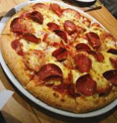
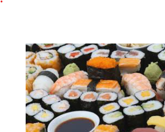
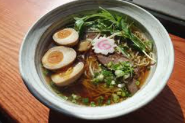

My favourite food
- Fav 1
My favourite food is pizza. I love the combination of melted cheese, tangy tomato sauce, and a crispy crust. It's a versatile dish that can be customized with various toppings, making it perfect for any occasion. Whether it's a classic Margherita or a loaded meat lover's pizza, I can't resist indulging in this delicious treat. Here a picture!

here is a blog about pizza: blog about pizza!
-
Fav 2
My second favourite food is sushi. I enjoy the delicate flavors and artistic presentation of sushi rolls. The combination of fresh fish, vinegared rice, and various toppings creates a harmonious blend of tastes and textures. Whether it's a simple cucumber roll or a more elaborate dragon roll, sushi always satisfies my cravings for something light and flavorful.

here is a blog about sushi: blog about sushi!
-
Fav 3
My third favourite food is ramen. I love the rich and savory broth, tender noodles, and a variety of toppings that make each bowl of ramen a unique experience. Whether it's a classic shoyu ramen or a spicy miso ramen, I find comfort in slurping up the flavorful broth and enjoying the satisfying combination of ingredients. Ramen is the ultimate comfort food for me, especially on a cold day.

here is a blog about ramen: blog about ramen!